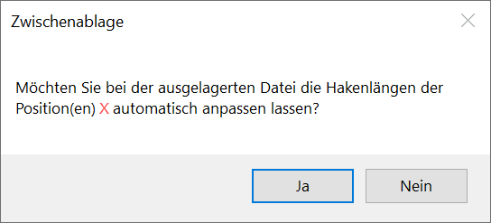

Einen beliebigen Zeichnungsbereich in die ISBCAD-Zwischenablage kopieren.
·In der ISBCAD-Zwischenablage können bis zu sechs Zeichnungsbereiche abgelegt und von dort in andere ISBCAD Zeichnungen eingefügt werden. Die in der Zwischenablage enthaltenen Zeichnungsteile werden im Funktionsbereich angezeigt.
·Bei dem Zwischenspeichern von Verlegungen werden die zugehörigen Auszugsformen automatisch hinzugefügt.
·Verknüpfte Bewehrungsverlegungen bleiben erhalten, wenn die Hauptverlegung (Verlegefaktor ≥ 1) zusammen mit mindestens einer oder allen verknüpften Verlegungen (Verlegefaktor = 0) selektiert wird. Wird nur die Hauptverlegung oder mindestens eine der verknüpften Verlegungen ausgewählt, wird die Verknüpfung beim Kopieren in die ISBCAD-Zwischenablage entfernt.
·Wenn zu einer Auszugsform mehrere Positionen vorhanden sind und nicht der größte Stabdurchmesser kopiert wird, können die Hakenlängen an den neuen Durchmesser angepasst werden. Sie erhalten in diesem Fall eine Meldung. Wählen Sie Ja, um die Hakenlängen der Auszugsform in der zwischengelagerten Kopie an den neuen Durchmesser anzupassen. Wählen Sie Nein, wenn die Hakenlänge nicht geändert werden soll. Die Vorschau im Funktionsbereich wird nach der Änderung angepasst. Siehe: Hakenlängen an den Stabdurchmesser anpassen
 |
|
Hinweis: |
|
Die ISBCAD-Zwischenablage ist unabhängig von der WINDOWS®-Zwischenablage. Zum Übertragen von Zeichnungsteilen in externe Programme (z. B. MS Word) kann die Funktion [Datei | Grafik | Speich] verwendet werden. » Grafik |

So wird's gemacht:
§Wählen Sie eine Auswahlmethode (im Funktionsbereich)
|
o.Clip (nur ganze Elemente): Geschnittenen Linien und Kreise werden nicht übernommen (Standardeinstellung). |
|
m.Clip (Bereich ausschneiden): Geschnittenen Linien und Kreise werden übernommen. |


§Definieren Sie den zu kopierenden Bereich. [1.Punkt]; [2.Punkt].
Optionen (im Funktionsbereich):
|
Auswahl eines rechteckigen Bereiches. Klicken Sie den Punkt an, von dem aus der Auswahl-Rahmen um die entsprechenden Elemente aufgezogen werden soll, bewegen Sie den Cursor und klicken Sie erneut, um die Auswahl abzuschließen. (Standardeinstellung). |
|
Auswahl eines polygonalen Bereiches durch Klicken von Polygon-Punkten. Bestätigung der Auswahl durch Rechtsklick. |


Der gewählte Zeichnungsbereich wird in die ISBCAD-Zwischenablage kopiert (s. Vorschau im Funktionsbereich). Sie können sofort einen weiteren Zeichnungsbereich definieren.
Zugehörige Referenzen:
·Zwischenablage von Zeichnungen
Siehe auch: